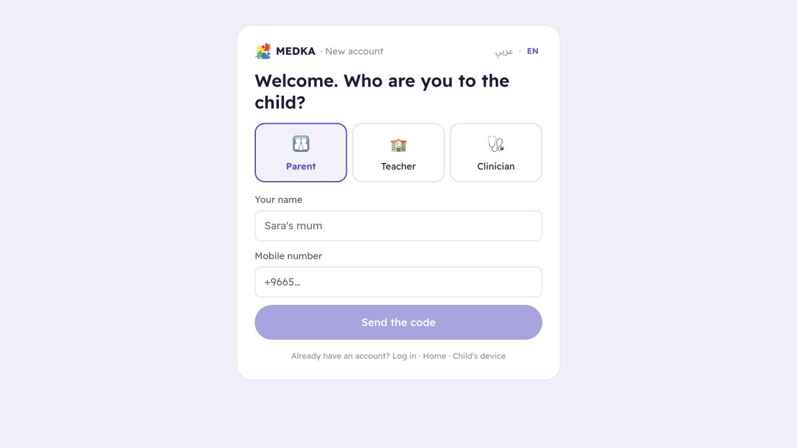

تحتاج مساعدة مع مدكا؟
تعرّف على طريقة إنشاء الحساب وفتح واجهة الطفل والتواصل مع الفريق المناسب لاستفسارك عن التطبيق أو الفحص.
إنشاء الحساب ودخول الطفل
اختر دورك عند البدء. يدخل ولي الأمر أو المعلّم أو الأخصائي اسمه ورقم جواله ويطلب من مدكا إرسال رمز الدخول. وإذا عندك حساب، اختر «تسجيل الدخول».
من جهاز الطفل، افتح شاشة دخول الطفل وأدخل رمز العائلة والرقم السري من حساب ولي الأمر.


في الخطوة الأولى تختار إذا كنت ولي أمر أو معلّمًا أو أخصائيًا.
الأسئلة الشائعة
هل يغني مدكا عن الأخصائي؟
يدعم مدكا التدريب في البيت ويجمع الملاحظات. ويظل تحديد الأهداف ومراجعة التقدّم واعتماد التغييرات من دور الأخصائي.
هل يقدر طفلي يستخدم رفيق إذا كان ما يتكلّم للحين؟
نعم. يوفّر التطبيق خيارات مصوّرة يضغط عليها الطفل. ويشجّعه رفيق على الرد بالضغط أو بإصدار صوت أو بالإشارة أثناء التدرّب على التواصل.
على أي أجهزة يشتغل مدكا؟
يشتغل مدكا على المتصفح من الجوال أو الجهاز اللوحي أو اللابتوب. ويذكر موقعه أن مزايا الكاميرا والصوت تعمل بشكل أفضل على الجوال أو الجهاز اللوحي.
وش يصير للفيديو أثناء اللعب؟
يوضّح مدكا أن الملاحظة تتم مباشرة على الجهاز، وأن الاحتفاظ بمقاطع قصيرة يتطلّب موافقة ولي الأمر. راجع صفحة الأمان والخصوصية للاطّلاع على الإعدادات الظاهرة في التطبيق.
ما الأعمار المناسبة لكل منتج؟
يقدّم تطبيق مدكا اللعب الموجّه للأطفال من عمر سنتين إلى ١٠ سنوات. ويستهدف الفحص المقترح في مدكا DX الأطفال من عمر ١٨ إلى ٧٢ شهرًا عند وجود مخاوف بشأن النمو.
وش اللغات المتوفرة؟
واجهة الكبار متوفّرة بالعربية والإنجليزية. وبحسب مدكا، يتحدّث رفيق مع الطفل باللهجة الخليجية.
كيف تتعرّف العيادة على فحص مدكا DX؟
راسل كراما لتقنية المعلومات للاستفسار عن خطوات استقبال معلومات الأسرة والفحص المقترح للأخصائي. وراجع دليل فريق الرعاية للتعرّف على أدوات الأخصائي والمعلّم في تطبيق مدكا.
المصدر الأسئلة الشائعة في موقع مدكا